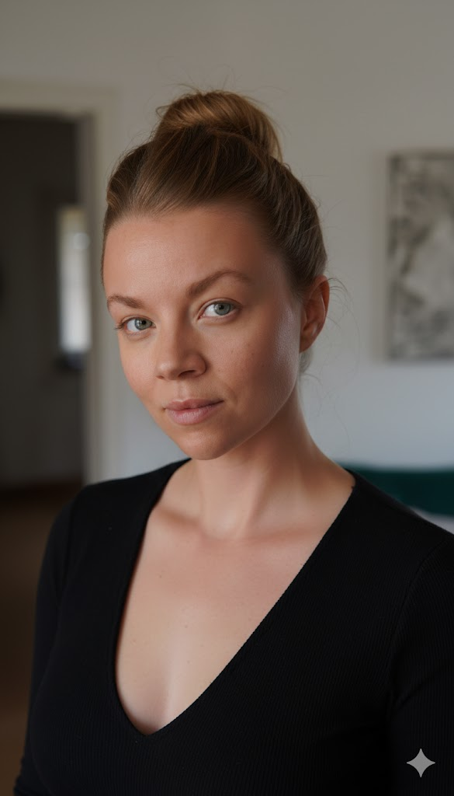

01
Écouter
Je m'immerge sur le terrain pour comprendre ce que ce public vit et attend vraiment. Terrain, entretiens, observation : je remonte jusqu'au vrai nœud de décision — rarement celui qu'on croyait.
Stratégie de croissance par le lien humain
Au lieu d'acheter de la visibilité qui ne convertit pas, je crée les occasions concrètes où votre futur client vous choisit de lui-même — et en parle autour de lui.
Ce qui vous a amené ici
Peut-être que vous vous reconnaissez là-dedans :
Vous savez à qui vous voulez parler. Mais entre ce que vous imaginez d'eux et ce qu'ils vivent vraiment, il y a un écart que personne n'est allé mesurer.
Vous avez mis de l'argent dans des campagnes. Elles ont été vues. Et après ? Personne ne sait dire ce qu'elles ont changé.
Vous faites ce que vous avez toujours un peu fait. Aujourd'hui vous aimeriez faire mieux et surtout différemment — mais comment ?
Vos meilleurs clients arrivent par le bouche-à-oreille. C'est votre premier canal, et c'est le seul que vous laissez au hasard.
Vous ne regardez pas au bon endroit.
La plupart des stratégies se décident à l'abri, entre quatre murs. On suppose ce que veulent les gens. On formule pour eux, sans eux. Puis on s'étonne du silence. Ce n'est pas un problème de message, c'est un problème de point de départ : la décision de vous choisir ne se joue presque jamais là où on l'imagine. Elle se joue dans le quotidien de vos clients, de vos membres, et de vos partenaires — dans une conversation à laquelle vous n'êtes pas invité. Mon job, c'est d'y aller.
Tant que vous vous contentez de pousser de l'information, vous restez à l'extérieur de leur vie.Tant que votre offre ne change rien à leur quotidien, vous restez remplaçable.
Ma solution
Pour bâtir des ponts solides entre votre public et vous. Je crée des initiatives ancrées dans les besoins et la vie réelle de votre écosystème — en tissant une toile entre votre public, vos partenaires et vous, je fais de votre structure la réponse évidente. Vous ne courez plus après votre marché : vous devenez un vrai partenaire de sa vie, et votre public devient votre premier ambassadeur.
Je m'immerge sur le terrain pour comprendre ce que ce public vit et attend vraiment. Terrain, entretiens, observation : je remonte jusqu'au vrai nœud de décision — rarement celui qu'on croyait.
Je réunis autour de vous les acteurs qui comptent déjà pour votre public, et je donne à chacun une bonne raison de jouer le jeu. Je crée une coalition, pas une campagne.
Je conçois les occasions de rencontre qui transforment cette proximité en clients, en recommandations et en réputation positive.
Pour qui ?
Votre métier se vend par la confiance, pas par la vitrine. Vous voulez gagner du terrain sans dépendre du hasard ni de la surenchère publicitaire.
Votre cause mérite mieux qu'un message de plus. Vous voulez atteindre votre public réel et embarquer vos partenaires dans autre chose qu'un logo sur une affiche.
Ce que vous construisez vraiment
Des liens, un écosystème, une réputation : des actifs qui continuent de travailler pour vous longtemps après la fin du mandat — parce que votre stratégie sera enfin issue du terrain.
Ils en parlent mieux que moi
Eve a rapidement compris les enjeux et la finalité de notre projet. Attentive, pragmatique et pro-active, elle a fédéré une équipe pluridisciplinaire. J'ai apprécié la qualité de l'output et son engagement. Merci !
J'ai mandaté Eve pour un sondage auprès des 17–25 ans jurassiens. Après une séance de pilotage, je lui ai laissé la communication et le calendrier. Une belle collaboration sur 12 mois. Je recommande vivement.
Eve est une personnalité très créative, qui fait des propositions concrètes et les met en œuvre dans les délais. Elle a géré la communication de notre Conférence nationale — vidéos, réseaux, web. Je la recommande vivement.

La fondatrice
« Ma mission est de créer des ponts entre les humains et que chacun·e puisse y trouver un intérêt. »
Je viens des sciences humaines, et j'ai passé plus de dix ans en communication, marketing digital, événementiel et gestion de projet. J'y ai appris une chose que beaucoup d'organisations refusent de voir : les gens ne viennent pas à vous.
L'humain est économe de son énergie, guidé par ses émotions, influencé par sa tribu. Il ne cherche pas votre offre — il réagit à une bonne occasion, un conseil d'un ami, au bon moment.
Le jour où j'ai compris que mon métier n'était pas de pousser de l'information mais de déplacer un comportement, tout a changé. C'est ce que j'apporte aujourd'hui aux entreprises et aux associations romandes qui veulent grandir autrement.
Eve Schaller Fondatrice · Agence Curcuma
Travaillons ensemble
Parlons-en — le premier échange est déjà utile. Choisissez votre niveau d'engagement.
Pas besoin de crier pour être vu.
Devenez une évidence pour votre public.